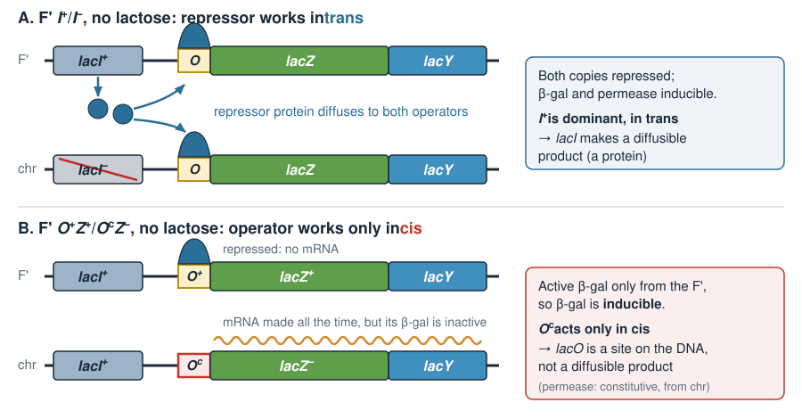
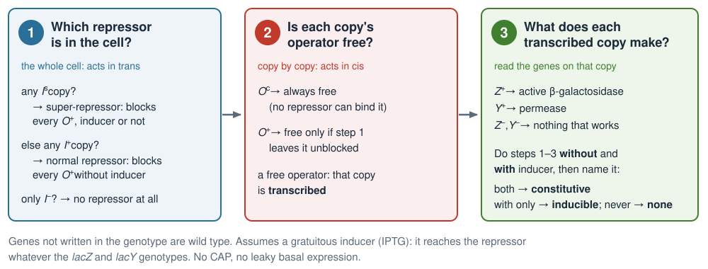

Prokaryotic regulation (recap)
Part 6: Gene regulation & development. The lac operon as an example of genetic analysis
About this lecture
Recap from 5MO103. You have met the lac operon in Microbiology and basic molecular biology: a repressor, an operator, three genes, and lactose as the switch. Today we look at it as geneticists. Jacob and Monod worked out the model in 1961 from mutants, before anyone had purified the repressor or sequenced the operator.
- The mutant classes: constitutive (I−, Oc) and uninducible (Is, P−).
- Merodiploids (partial diploids made with an F′ plasmid) to test dominance.
- Cis vs trans: a mutation that acts in trans changes a diffusible product (a protein); one that acts only in cis changes a site on the DNA.
- A three-step recipe for predicting any merodiploid, with worked examples.
- Complementation between lacZ− and lacY−, and the polarity trap.
- Briefly: attenuation of the trp operon.
Book: Hartwell, Genetics: From Genes to Genomes, the chapter on gene regulation in prokaryotes.
The lac operon in one picture

- lacZ (β-galactosidase), lacY (permease) and lacA are transcribed together, as one mRNA, from one promoter (P).
- The repressor (LacI) is made all the time from its own gene. It binds the operator (O) and blocks transcription.
- The inducer (allolactose, made from lactose; or IPTG in the lab) binds the repressor, which then lets go of O.
Jacob & Monod: hunting for regulatory mutants
Screen E. coli on indicator plates. X-gal is colourless, but β-galactosidase cuts it into a blue dye: colonies that make the enzyme turn blue. Plate with and without inducer, and look for colonies that behave oddly.
| Phenotype | What it means | Mutations found |
|---|---|---|
| Constitutive | enzymes made with or without inducer | lacI−, lacOc |
| Uninducible | enzymes never made, although lacZ and lacY are intact | lacIs (“super-repressor”), promoter P− |
| Structural | one enzyme missing, regulation normal | lacZ−, lacY− |

lacI− and lacOc give the same phenotype in a haploid cell. So do lacIs and P−. How can you tell them apart? You need a second copy of the operon in the same cell.
The people

.jpg){kind=link}
François Jacob (left), a bacterial geneticist, and Jacques Monod (right), a biochemist, worked at the Institut Pasteur in Paris.
- Monod had studied how E. coli switches to lactose; Jacob had built the tools of bacterial conjugation.
- Together they put lac mutations into partial diploids and read off dominance and cis/trans behaviour.
- From that alone they proposed the repressor, the operator and the mRNA (1961).
- Nobel Prize 1965, shared with André Lwoff.
Merodiploids: a second copy on an F′
An F′ plasmid is an F factor that has picked up a piece of the chromosome (here the lac region). Transfer it by conjugation into a recipient, and the cell has two copies of the lac genes: a partial diploid, or merodiploid.
- Notation: F′ genotype / chromosome genotype, e.g. F′ I+ / I−. Genes not written are wild type.
- Now you can ask the questions from Part 1 and Part 3:
- Dominance: in I+/I−, which phenotype wins? (Extensions to Mendel)
- Complementation: do two mutations on different copies restore the wild type? (Mutation unit)
- Cis vs trans: does the mutation affect only the genes on its own DNA molecule, or both copies?
Cis vs trans: the two decisive merodiploids

- A. F′ I+ / I− is inducible: I+ is dominant and works on both copies. The lacI product diffuses: it is a protein.
- B. F′ O+ Z+ / Oc Z− is inducible for β-gal: the Oc mutation only affects the lacZ next to it. lacO is a DNA site.
The super-repressor Is
Is makes a repressor that binds the operator but not the inducer.
- In a haploid: the repressor never lets go. Uninducible.
- In F′ I+ / Is: the cell has both kinds of repressor. Inducer releases the normal one, but the Is repressor stays on both operators. Still uninducible: Is is dominant, and it acts in trans.
- I− and Is are both trans-acting, yet one is recessive and one dominant. Trans says where a mutation acts; dominance says which allele wins. They are separate questions.
- The only escape from Is is a copy whose operator the repressor cannot bind: an Oc, in cis.
Promoter mutations: uninducible, but in cis
A P− mutation changes the promoter so that RNA polymerase cannot start there. Like Is, it is uninducible in a haploid. Unlike Is, it is a site:
| Is | P− | |
|---|---|---|
| What is changed | the repressor protein | the DNA where polymerase binds |
| Haploid phenotype | uninducible | uninducible |
| Acts on | every copy in the cell (trans) | only its own copy (cis) |
| With a wild-type second copy | the wild-type copy is blocked too | the wild-type copy works normally |
So the same experimental logic separates the two uninducible classes as separates the two constitutive classes: give the cell a wild-type second copy and see whether it still works.
How to read a merodiploid result
Put the unknown mutation in a cell with a wild-type second copy, and ask what happens to each copy:
| Result | Interpretation | Examples |
|---|---|---|
| The cell behaves as wild type | the mutant lost a diffusible product; the other copy supplies it in trans (recessive) | I− |
| Both copies show the mutant phenotype | an altered diffusible product that wins (dominant, in trans) | Is |
| Only the mutant’s own copy is affected, whatever the other copy carries | a DNA site (cis-acting) | Oc (always on), P− (always off) |
Design rule: you must be able to tell the two copies’ products apart. Make sure that the enzyme you measure can only come from one copy, for example by putting Z− on the other.
A recipe for any merodiploid

Step 1 is about the cell (trans). Step 2 is about each copy (cis). Step 3 reads off what each transcribed copy makes. Do it twice, without and with inducer.
Worked example 1: trans works both ways
Strain: F′ I− Z+ Y− / I+ Z− Y+
Step 1. One copy is I+ (the chromosome): the cell has normal repressor. It blocks every O+ without inducer.
Step 2. Both operators are O+: free only with inducer.
Step 3.
| Copy | Transcribed? (− / + inducer) | Makes |
|---|---|---|
| F′ I− O+ Z+ Y− | no / yes | active β-gal; no permease |
| chr I+ O+ Z− Y+ | no / yes | inactive β-gal; permease |
Phenotype: β-gal inducible, permease inducible.
Two lessons in one strain: repressor from the chromosome controls the F′ (trans works in both directions), and Z− and Y− on different copies complement.
Worked example 2: one cell, two phenotypes
Strain: F′ I+ Z− / I− Oc Z+ Y−
Step 1. The F′ is I+: normal repressor in the cell.
Step 2. F′ operator O+: free only with inducer. Chromosome operator Oc: always free.
Step 3.
| Copy | Transcribed? (− / + inducer) | Makes |
|---|---|---|
| F′ I+ O+ Z− Y+ | no / yes | inactive β-gal; permease |
| chr I− Oc Z+ Y− | yes / yes | active β-gal; no permease |
Phenotype: β-gal constitutive, permease inducible.
The two enzymes of one cell have different phenotypes, because they come from different copies with different operators. Only a cis-acting site can do that.
Worked example 3: the super-repressor meets Oc
Strain: F′ Is Oc Z− / I+ Z+
Step 1. One copy is Is: the cell has super-repressor. It blocks every O+, with or without inducer.
Step 2. F′ operator Oc: always free, even of Is repressor. Chromosome operator O+: never free.
Step 3.
| Copy | Transcribed? (− / + inducer) | Makes |
|---|---|---|
| F′ Is Oc Z− Y+ | yes / yes | inactive β-gal; permease |
| chr I+ O+ Z+ Y+ | no / no | (nothing) |
Phenotype: β-gal none, permease constitutive.
Notice that Is and Oc sit on the same copy here, yet Is shuts down the other copy. Where a lacI allele sits does not matter; where an operator sits does.
Try it: lac merodiploids
Common mistakes
- “Trans means dominant.” No. I− acts in trans and is recessive; Is acts in trans and is dominant.
- “Oc makes the whole cell constitutive.” No. Only the genes on the same DNA molecule as the Oc.
- “An I− copy is uncontrolled.” No. It is controlled by repressor made from any I+ copy in the cell.
- “A Z− copy that is transcribed gives β-gal.” No. It makes inactive protein. Count only Z+ copies.
- Forgetting the unwritten genes. F′ Oc Z− is also I+ and Y+.
- Naming a phenotype from one condition. Always work out both no inducer and with inducer.
Complementation in the operon
F′ Z+ Y− / Z− Y+: each copy makes the protein the other cannot. The cell has both enzymes, inducibly. So lacZ and lacY are different genes, even though they share one promoter and one mRNA.
- This is the complementation test from the Mutation unit (Part 3), done in a bacterium: two recessive loss-of-function mutations, one on each copy.
- Fail to complement → same gene. Complement → different genes.
- Benzer called the unit defined by this cis–trans test a cistron. In modern words: a gene that encodes one polypeptide.
The polarity trap
In bacteria, ribosomes start translating the mRNA while it is still being made. A nonsense mutation early in lacZ makes ribosomes fall off; the downstream mRNA is left bare and is terminated or degraded. lacY and lacA on that copy are then expressed poorly.
| F′ / chromosome | β-gal | permease | Reading |
|---|---|---|---|
| F′ Z−(missense) / Y− | yes | yes | complement: different genes ✓ |
| F′ Z−(early nonsense, polar) / Y− | yes | low | seems not to complement: misleading |
A mutation that seems to fail to complement mutations in two neighbouring genes is either a deletion that removes both, or a polar mutation in the upstream gene.
A repressible operon: trp
The trp operon makes the enzymes that synthesise tryptophan, so the cell wants it on when tryptophan is scarce. That is the reverse of lac.
| lac | trp | |
|---|---|---|
| Pathway | breaks down lactose | makes tryptophan |
| Kind of control | inducible: off unless lactose is present | repressible: on unless tryptophan is present |
| Small molecule | inducer releases the repressor | tryptophan activates the repressor (a corepressor) |
| Repressor gene | lacI | trpR, far from the operon (trans) |
| Second layer | CAP–cAMP (not today) | attenuation, in the leader mRNA (cis) |
Attenuation: the ribosome reads the tryptophan level

- The leader mRNA encodes a short peptide with two Trp codons in a row (in region 1).
- Plenty of Trp: charged tRNATrp is abundant; the ribosome runs through region 1 and covers region 2. Regions 3 and 4 pair: a terminator. Transcription stops.
- Little Trp: the ribosome stalls at the Trp codons. Region 2 pairs with region 3 (antiterminator); 3:4 cannot form. Transcription continues.
Attenuation as genetics
- The codons in the leader peptide decide which amino acid is sensed. Other amino-acid operons use the same trick: the his operon leader has seven His codons in a row.
- Deletions of the attenuator (region 3–4) raise trp expression even when the repressor works. They act only on their own copy: cis-acting, like Oc.
- trpR− and attenuator deletions add up: the two controls are independent layers.
So for any leader mutation, ask: where will the ribosome stall now, and which hairpin can form?
Check yourself
Use the recipe. Answers in the notes.
- F′ I− / Is: β-gal and permease?
- F′ Oc Z+ Y− / I− Z+: β-gal and permease?
- A new mutation is dominant in a merodiploid. Can you conclude that it is cis-acting?
- Why must one copy carry Z− when you test whether a constitutive mutant is I− or Oc?
Summary
| Concept | Key fact |
|---|---|
| Operon | several genes, one promoter, one mRNA; lacZ, lacY, lacA |
| Negative control | LacI repressor binds lacO; inducer releases it |
| Constitutive mutants | I− (no repressor), Oc (operator cannot bind repressor) |
| Uninducible mutants | Is (repressor cannot bind inducer), P− (no promoter) |
| Merodiploid | F′ / chromosome; a partial diploid to test dominance and cis/trans |
| Trans-acting | I+ over I− (recessive), Is over I+ (dominant): a diffusible protein |
| Cis-acting | Oc, P−, attenuator deletions: affect only their own DNA molecule |
| Recipe | 1 repressor in the cell; 2 free operators, copy by copy; 3 products; − and + inducer |
| Complementation | Z− and Y− on different copies give both enzymes; beware polar mutations |
| trp | repressible; TrpR + Trp; attenuation by ribosome stalling on Trp codons |
Where this leads
- Next: Eukaryotic regulation & epigenetics. Enhancers and promoters are cis-acting elements, and transcription factors are trans-acting proteins, the same logic as lacO and lacI. Chromatin adds a layer that bacteria do not have.
- RNA-mediated regulation. Small RNAs that turn genes down after transcription, discovered, like the lac mutants, through a genetic screen. A 3′UTR site behaves like Oc.
- Development & model organisms. Mutant screens like Jacob and Monod’s, scaled up to find the genes that build an embryo, and lacZ reused as a reporter gene.